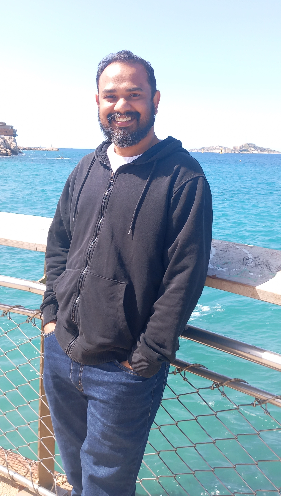

Hi! I'm Dipayan...
-
Since August 2026; I am an Assistant Professor at the Department of Computer Science and Engineering, SRM University, Andhra Pradesh. Preceeding this position, between September 2025 and June 2026, I was an Assistant Professor (ATER in the French higher education system) at Ecole Centrale Méditerranée in Marseille, France.
During this period, I was also affiliated to the team ACRO of the laboratory LIS under the Aix-Marseille Université.
From February 2025 to August 2025, I was a post-doctorate fellow at the Department of Computer Science and Mathematics of the Lebanese American University with Faisal N. Abu-Khzam.
From January 2022 to December 2024, I carried out my PhD at LIMOS under l'Université Clermont Auvergne on the topic of structural and algorithmic aspects of identification problems in graphs under the supervision of Annegret K. Wagler , Florent Foucaud and Michael Henning.
Moreover, between January 2023 and January 2025, I was a research associate at the Department of Mathematics and Applied Mathematics, University of Johannesburg (with Michael Henning as my academic host).
My research interests are in dominating sets and domination-based identification problems in graphs and graph modification problems. I am interested in both combinatorial and algorithmic aspects of these problems.
You can find my work on any of the following platforms:
